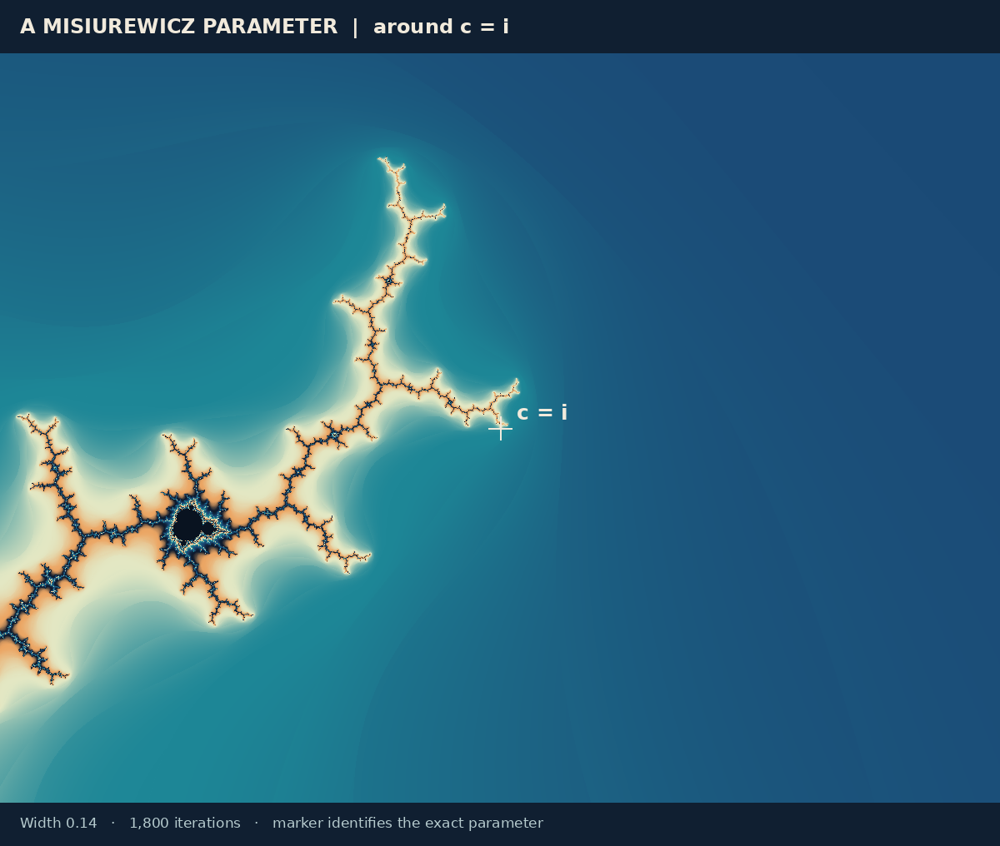
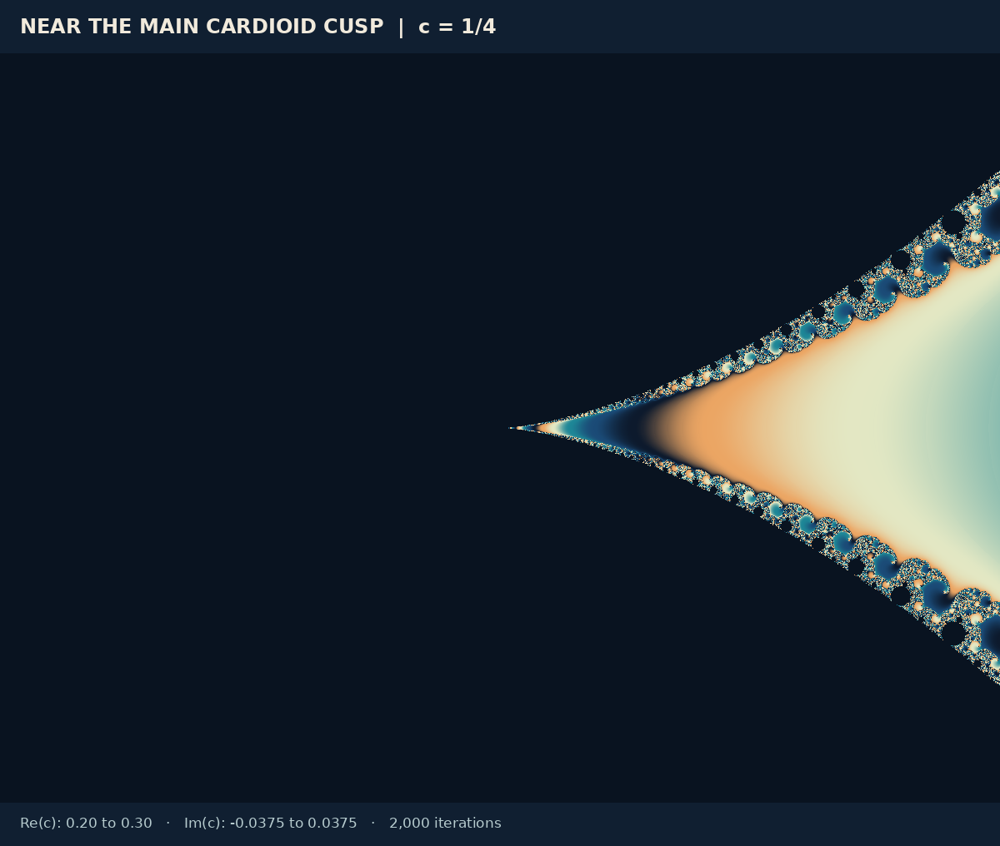

Gallery & interactive lab
Choose a parameter, compare its dynamical plane, and investigate how a finite picture relates to an infinite definition. These experiments run locally in your browser and require no external service.
A point becomes a Julia picture
Click the Mandelbrot image to choose c, choose a named example, or enter real and imaginary coordinates. The Julia view redraws the corresponding filled-Julia approximation and its exterior. Watch how connected-looking forms break into dust as the parameter leaves the Mandelbrot set.
Parameter plane · click to select c
Re(c): −2.2 to 1.0 · Im(c): −1.2 to 1.2 · 350 iterations
Dynamical plane · selected Julia view
Re(z): −2.1 to 2.1 · Im(z): −1.575 to 1.575
Preparing the experiment…
This is a finite experiment, not a membership oracle. Dark samples have not escaped within their budget: 350 iterations in the parameter map, and the selected budget in the Julia view. The live renderer does not identify every basin or classify every neutral orbit. Zero-area Julia sets can be almost invisible because they fall between sample points. The c = −2 example adds its exact interval as a visibility guide; the static dust plate below uses inverse-iteration points.
Experiments to try
- Start with c = 0. The filled Julia set is the unit disk; its boundary is the unit circle. Set c = −1 to see the basilica and its attracting two-cycle.
- Move c along the real axis from −0.7 to −0.8. This crosses the main cardioid’s period-doubling attachment at −3/4. Compare the orbit explanation in Cardioids, bulbs & periods.
- Compare c = 0.24, 0.25, and 0.26. Near the parabolic cusp, increase the iteration budget and look for slow exterior escape.
- Choose the rabbit example. The decimal approximates a superattracting period-three center; its dynamical arrangement reflects a three-cycle.
- Choose c = 1 and then c = i. Both can look sparse, but one is outside the Mandelbrot set and gives Cantor dust, while the other is a connected Misiurewicz example. A picture’s apparent thickness is not its connectedness.
Six dynamical worlds

| Parameter | Exact or intended model | Interpretation |
|---|---|---|
| c = 0 | f(z) = z² | K is the closed unit disk; J is its boundary circle. |
| c = −1 | Basilica | The critical point belongs to the superattracting cycle 0 ↔ −1. |
| c = −2 | Chebyshev interval | K = J = [−2, 2]; no two-dimensional filled interior. |
| c ≈ −0.122561166876 + 0.744861766620i | Douady rabbit center, to within 10−12 | The exact root of the period-three center equation is superattracting. The plotted decimal is nearby. |
| c = 1/4 | Parabolic cauliflower | The critical orbit approaches the neutral fixed point 1/2. |
| c = 1 | Escaping critical orbit | 0 → 1 → 2 → 5 → …; the Julia set is a totally disconnected Cantor set. |
A copy, a boundary point, and a cusp





Zoom in yourself
The plates above are fixed windows. The viewer below lets you choose your own: drag the picture to move it, click to zoom in and Shift-click to zoom out, or use the buttons, the arrow and +/− keys, or the wheel with Ctrl or ⌘ held. The window list includes the windows of the plates in this atlas. The coloring menu offers the seven colorings of the first figure in computing the pictures, and “Switch to Julia set” shows the filled Julia set of the parameter at the center of the picture, in the same coloring. Zoom into it in the same way; the button then takes you back to the Mandelbrot window you left.
How these illustrations were made
The methods themselves, and what each of them proves, are explained in the chapter on computing the pictures. This section records how the atlas’s own plates were made.
The raster plates use the recurrence directly in binary64 arithmetic, sampling the center of each image pixel. Mandelbrot images start at zero and vary c; Julia images fix c and vary the initial point. Analytic tests mark the main cardioid and period-two disk in Mandelbrot plots. Other samples stop when they escape or reach the iteration budget.
Mandelbrot escape uses |z| > 2. For Julia plots the chosen radius is max(2, |c| + 1). Any radius of at least max(2, |c|) certifies escape for every c (see the escape proof), so this slightly larger one is valid too. After a detected escape, a fractional count based on n + 1 − log₂(log|zn|) selects a cyclic blue–teal–gold palette. The count’s additive normalization and palette are artistic choices, not additional set membership rules.
Two cases need visible geometric guides. For c = −2, the exact line segment [−2, 2] is drawn over the escape-time image, since a two-dimensional sample grid may miss it entirely. For c = 1, a pseudo-random backward orbit with a fixed seed repeatedly chooses a branch of z ← ±√(z − 1), starting at a repelling fixed point. Its plotted points make the Cantor Julia set visible. They are finite numerical samples, not filled disks or a proof that all Julia points were found.
Labels, markers, period badges, and zoom rectangles are explanatory overlays. No picture is copied from a source publication; all were computed for this atlas. Exact sample sizes, coordinates, iteration budgets, and overlay notes are recorded in the local image data manifest.
| Plate | Parameter or window | Iteration budget |
|---|---|---|
| Julia gallery | Re(z) ∈ [−2.1, 2.1]; Im(z) ∈ [−1.575, 1.575]; parameters listed above | 1,200 |
| Minibrot middle / close panel | [−1.95, −1.55] × [−0.15, 0.15] / [−1.8, −1.73] × [−0.02625, 0.02625] | 1,600 |
| Misiurewicz detail | Re(c) ∈ [−0.07, 0.07]; Im(c) ∈ [0.9475, 1.0525] | 1,800 |
| Cusp detail | Re(c) ∈ [0.20, 0.30]; Im(c) ∈ [−0.0375, 0.0375] | 2,000 |
| Iteration-budget comparison | Re(c) ∈ [0.245, 0.285]; Im(c) ∈ [−0.015, 0.015] | 30 / 100 / 1,500 |
Continue the experiments mathematically
The escape proof explains why crossing the radius can certify escape. Orbits and stability explains why a long apparently quiet orbit need not be periodic. Julia sets distinguishes the boundary from the filled set, and dimension and area explains why counting dark pixels cannot settle a geometric theorem.
Sources checked on 20 October 2026.